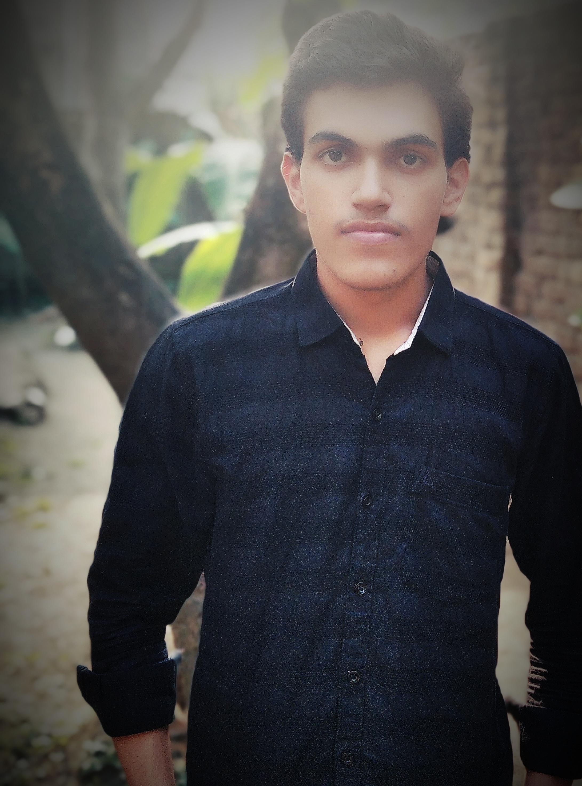
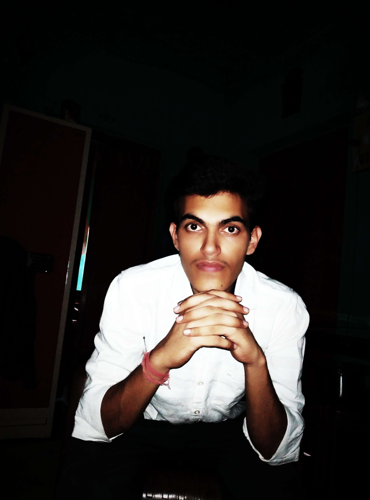

Welcome to my website
My introduction
I would like to take the opportunity to introduce myself to you.
Yeah, so i am Pratush Tiwari.
Okay, I am a first year student from civil engineering department of IIT
Kharagpur.
I am not describing my traits here. Beacause when I am asked to describe myself, I forget who I am. When I am asked to describe, I just bring good things forward. That should not happen. I believe that actual traits come out when difficult situation arises.
I will provide legal service to the users in future so remain in touch with this website.
My pictures

